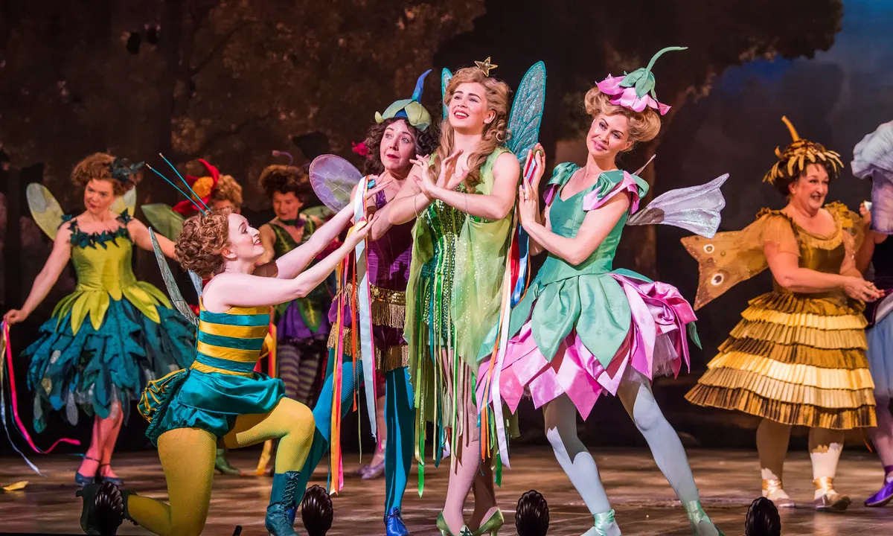

Avinash Yandapalli
IOL.
Then the Lord Chancellor has at last given his consent
to your marriage with his beautiful ward, Phyllis?
STREPH.
Not he, indeed. To all my tearful prayers he answers
me, "A shepherd lad is no fit helpmate for a Ward of Chancery." I
stood in court, and there I sang him songs of Arcadee, with
flageolet accompaniment—in vain. At first he seemed amused, so
did the Bar; but quickly wearying of my song and pipe, bade me get
out. A servile usher then, in crumpled bands and rusty bombazine,
led me, still singing, into Chancery Lane! I'll go no more; I'll
marry her to-day, and brave the upshot, be it what it may! (Sees
Fairies.)
But who are these?
IOL.
Oh, Strephon! rejoice with me, my Queen has pardoned
me!
STREPH.
Pardoned you, mother? This is good news indeed.
IOL.
And these ladies are my beloved sisters.
STREPH.
Your sisters! Then they are—my aunts!
QUEEN.
A pleasant piece of news for your bride on her wedding
day!
STREPH.
Hush! My bride knows nothing of my fairyhood. I
dare not tell her, lest it frighten her. She thinks me mortal, and
prefers me so.
LEILA.
Your fairyhood doesn't seem to have done you much
good.
STREPH.
Much good! My dear aunt! it's the curse of my
existence! What's the use of being half a fairy? My body can
creep through a keyhole, but what's the good of that when my legs
are left kicking behind? I can make myself invisible down to the
waist, but that's of no use when my legs remain exposed to view!
My brain is a fairy brain, but from the waist downwards I'm a
gibbering idiot. My upper half is immortal, but my lower half
grows older every day, and some day or other must die of old age.
What's to become of my upper half when I've buried my lower half I
really don't know!
FAIRIES.
Poor fellow!
QUEEN.
I see your difficulty, but with a fairy brain you
should seek an intellectual sphere of action. Let me see. I've a
borough or two at my disposal. Would you like to go into
Parliament?
IOL.
A fairy Member! That would be delightful!
STREPH.
I'm afraid I should do no good there—you see, down
to the waist, I'm a Tory of the most determined description, but my
legs are a couple of confounded Radicals, and, on a division,
they'd be sure to take me into the wrong lobby. You see, they're
two to one, which is a strong working majority.
QUEEN.
Don't let that distress you; you shall be returned as
a Liberal-Conservative, and your legs shall be our peculiar care.
STREPH.
(bowing).
I see your Majesty does not do things by
halves.
QUEEN.
No, we are fairies down to the feet.
[ENSEMBLE.]
QUEEN.
Fare thee well, attractive stranger.
FAIRIES.
Fare thee well, attractive stranger.
QUEEN.
Shouldst thou be in doubt or danger,
Peril or perplexitee,
Call us, and we'll come to thee!
FAIRIES.
Aye! Call us, and we'll come to thee!
Tripping hither, tripping thither,
Nobody knows why or whither;
We must now be taking wing
To another fairy ring!
(Fairies and Queen trip off, Iolanthe, who takes an affectionate
farewell of her son, going off last.)
(Enter Phyllis, singing and dancing, and accompanying herself on a
flageolet.)
SONG—PHYLLIS.
Good morrow, good mother!
Good mother, good morrow!
By some means or other,
Pray banish your sorrow!
With joy beyond telling
My bosom is swelling,
So join in a measure
Expressive of pleasure,
For I'm to be married to-day—to-day—
Yes, I'm to be married to-day!
CHORUS.
(aside).
Yes, he's to be married to-day—to-day—
Yes, he's to be married to-day!
opera file link

ICONS